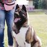

lovely
-
Mellisa Griffin
October 9th | (6 ) Comments
We had a great and easy experience adopting our little Labrador! this breeder was so flexible, kind, and willing to work with us. We have had a wonderful experience with our baby, , ever since we brought him home. He is upbeat, super healthy and lovable. We couldn’t be happier and would recommend pup home to anyone!! -
Shella Steward
June 1st | (20 ) Comments
I spent many hours reading up on Akitas and talking with this breeder before I purchased my Akita. I also have a 2 year old boy. My Akita loves our son and is very protective of him, but at the same time when we are playing outside she would run over him and grab his clothes in her mouth. Because of this, she is no longer allowed to play with him without a leash on. I think Akitas are beautiful dogs that need lots of training, and really think twice before buying one if you have small children, these dogs are so big and powerful they could do damage without intending to. Other aspects to consider, they like to dig trenches if bored. Not holes...TRENCHES! Usually very quiet, affectionate and sheds 2xyear. Very clean Usually only p**ps in one area of the yard. Does not normally like small animals except to eat.” -
Bob Garry
April 28th | (10 ) Comments
I adopted Cooper and had a wonderful experience. I have been asked when they are having their next litter. Cooper is basically trained already and gets along with my yorkiechon. I would recommend doing business and getting a new furry friend from the pup home. I would recommend them to anyone who wants a great puppy!!.
new homes
-
Henriete Clark
November 9th | (10 ) Comments
We couldn’t have found a better breeder. We are very lucky to have found you Not only are the puppies absolutely stunning but raised in such a loving environment. Thank you so much for all your help, we will definitely stay in touch.” -
Jane “ My Akita has just turned eighteen months. We got her knowing full well of the large size, shedding, and aggressive history. Starting from the beginning we were diligent about her training. She showed some tendency to mouth rather roughly early on, but we were able to break her. Potty training went well with the aid of a crate. She is now 80 pounds, with probably a little more filling out to do. She has the sweetest temperament of any dog I have owned. She is protective of her house and will bark if anyone approaches the yard. Other than that she rarely makes a sound. She is not aggressive toward strangers, and is gentle and obedient with kids. She has never chewed any item in the house. The shedding two times a year can be a nuisance, but it helps to keep up with the grooming. Overall with diligent training right off the bat, and socialization with people, the Akita is the best of all breeds!”
May 1st | (10 ) Comments -
Luke A. My Akita is truly a born observer. He never misses anything. He is strong and loving. This is a big dog with a gentle heart, great with kids and kitties. Needs a firm hand in training because he does have a mind of his own. They need to be part of a family; not a dog to be left outside and ignored. They are compassionate, hilarious and above all serious. If you have the time to share your life with them you will be well-rewarded and loved.”
April 28th | (10 ) Comments
Parents
- 
Nalley 7 years old this is her third litter. Has a great temperament and healthy enough to breastfeed her babies
May 9th | (10 ) Comments 
Brian 9 years old Male.
May 1st | (10 ) Comments
Lois 9 years old this is her 5 litter. Has a great temperament and healthy enough to breastfeed her babies
April 28th | (10 ) Comments
tree

Betsy 7 years old this is her third litter. Has a great temperament and healthy enough to breastfeed her babies
May 9th | (10 ) Comments
Khal 10 years old. He is an Alpha
May 1st | (10 ) Comments
Gina 6 years old this is her third litter. Has a great temperament and healthy enough to breastfeed her babies
April 28th | (10 ) Comments
What You Should Know About Us

We are a small family-owned operated kennel that offers healthy AKITA puppies… Our prime mission is to breed jovial and cute AKITA puppies for your loving homes. We have been into the AKITA breed for many years now, we are a trust-filled family for pets adoption. We are always concerned with the health, conformation, and temperament of all of our dogs. We take pride in the fact that
- Email Us: susank952@gmail.com
- 24/7 CUSTOMER SUPPORT
- PHONE: +13184791892
- © BOB Masky The Breeder